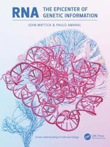

We are a research group within the School of Biotechnology and Biomolecular Sciences and the RNA Institute at the University of New South Wales (UNSW). As part of the UNSW School of Science, we welcome inquiries from those interested in joining our team or collaborating with us. Please contact Professor John Mattick for more information.
People
Professor John Mattick

Group leader
John Mattick is SHARP Professor of RNA Biology at UNSW Sydney. He was recently previously Executive of Genomics England (2018-2019), and Director of the Garvan Institute of Medical Research in Sydney (2012-2018), where he established one of the first HiSeq X10 sequencing and clinically accredited genome analysis facilities. He was previously the Foundation Director of the Institute for Molecular Bioscience and the Australian Genome Research Facility at the University of Queensland. He has published over 300 research articles and reviews, which have been cited over 100,000 times.
He is a Fellow of the Australian Academy of Science, the Australian Academy of Health & Medical Sciences, and the Australian Academy of Technology & Engineering. He is also an Associate Member of the European Molecular Biology Organization. He has received numerous awards including the inaugural Gutenberg Chair at the University of Strasbourg, the International Union of Biochemistry and Molecular Biology Medal, the Human Genome Organisation Chen Medal for Distinguished Academic Achievement in Human Genetics and Genomic Research, and the University of Texas MD Anderson Cancer Center Bertner Award for Distinguished Contributions to Cancer Research.
Dr. Mitchell Cummins

Senior Postdoctoral Fellow
I am a postdoctoral research fellow in the Mattick lab. My research focuses on investigating the function of ultra-conserved elements in animal genomes, especially in placental mammals. I also investigate the characteristics and roles of lncRNAs, with a particular interest in central nervous system (CNS) lncRNAs. I completed my PhD(Anatomy) at the University of Newcastle under supervisor Associate Professor Doug Smith investigating age-related changes in the CNS.
Dr. Saba Altaf

Postdoctoral Fellow
Hi! I am Saba — an RNA biologist and molecular neuroscientist with a passion for understanding
how the brain works at the molecular level.
I completed my PhD here in the Mattick Lab at UNSW Sydney in 2026, where I investigated the
subcellular localisation of brain lncRNAs, their protein interactions, and their roles in
spatial learning and memory. Before coming to UNSW, I completed my Master of Philosophy in
Molecular Biology at the University of the Punjab, Pakistan, where I researched the genetics of
asthma susceptibility.
I am now working as a Postdoctoral Research Associate, working on an ARC Discovery Project
exploring how long non-coding RNAs regulate cognition and brain function — using spatial
transcriptomics, proteomics, and in vivo approaches in rodent models.
Outside the lab, I am passionate about science communication and mentoring the next generation
of researchers.
Tansel Ersavas

PhD student 2021-present
Hello, I’m Tansel. I have extensive experience in developing complex systems, with a special
interest in Artificial
Intelligence, mobile computing, and XR/VR technologies. Before pursuing my PhD, I worked as an
Associate Director at
KPMG, where I specialized in AI-based solutions, and I led the "Deep Learning Initiative" at the
Garvan Institute of
Medical Research for four years.
My expertise spans deep learning, reinforcement learning, generative AI, large language models
(LLMs), intelligent
agents, robotics, animatronics, and immersive applications using VR and XR. I’ve applied these
technologies in
diverse industries, including healthcare/biotechnology and finance/banking.
Recently, my research has focused on the application of deep learning to nanopore RNA sequencing
and leveraging
Convolutional Neural Networks for analyzing high-dimensional non-image datasets in genomics,
transcriptomics, and
proteomics.
Rowan Heggen

PhD student 2026-present
Hello! My name is Rowan, and I am a PhD student in the Mattick group. In my current project, I
hope to decipher structure-function relationships in long noncoding RNAs. Particularly, I am
analysing the genome to see if lncRNAs select their protein binding partners through recurring
modules of RNA secondary structure. I am also interested in investigating the roles of lncRNA in
conducting neurodevelopment and in facilitating the everyday functioning of the brain.
Previously, I completed a Master of Research at Western Sydney University, where I studied
protein-RNA interactions involved in SARS-CoV-2 infection and DNA repair pathways.
Positions available
Please email if you are interested in a PhD or postdoc position in the lab.
Our Collaborators
Associate Professor Kelly Clemens
School of Psychology, UNSW
Associate Professor Martin Smith
Ramaciotti Centre for Genomics
Dr. Daniel Fernandez Ruiz
School of Biomedical Sciences, UNSW
Dr. Scott Berry
Single Molecule Science, UNSW
Professor Lars Ittner
Dementia Research Centre, Macquarie University
Research
Our lab focuses on exploring the diverse roles of long non-coding RNAs (lncRNAs) in cellular and developmental biology. We aim to uncover their contributions to various biological processes.
Key areas of our research include:
Structure-Function Relationships
Investigating how the structural properties of lncRNAs relate to their biological functions and molecular interactions.
Subnuclear Organization
Characterizing subnuclear organelles enriched with specific lncRNAs and uncovering their roles in cellular function.
Brain Function and Cognition
Exploring brain-expressed lncRNAs and their involvement in cognition, memory, and motor functions.
Genomic Associations
Studying lncRNAs expressed from genomic regions associated with complex traits and disorders to reveal their regulatory mechanisms.
Immune Regulation
Identifying lncRNAs that control immune cell differentiation and their contributions to immune system dynamics.
Evolutionary Conservation
Exploring the evolution and functional significance of ultraconserved elements in vertebrates.
Our research integrates advanced genomics, molecular biology, and computational approaches, with the ultimate goal of unraveling the intricate biology of lncRNAs and their contributions to health and disease.Publications
Book
RNA, the Epicenter of Genetic Information
